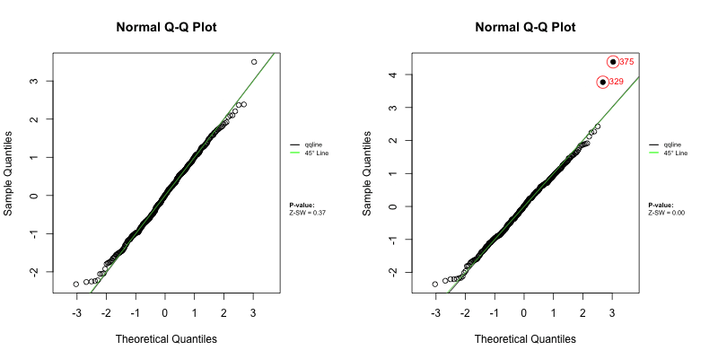
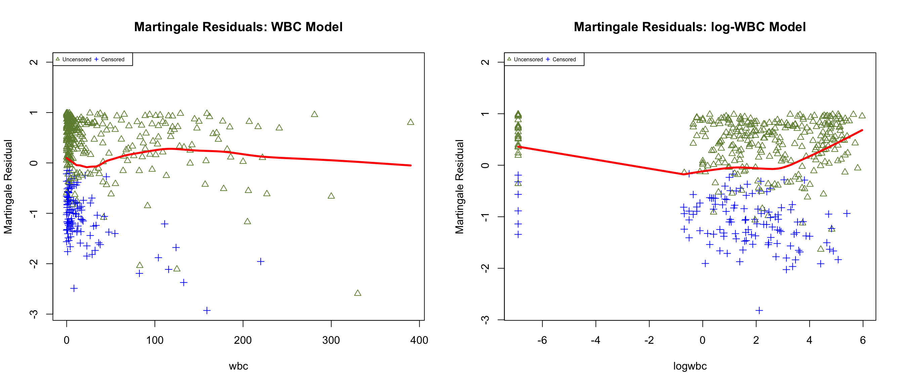

Code
# For developer use to refresh the local installation
remove.packages("Zresidual")
devtools::document()
devtools::install()# For developer use to refresh the local installation
remove.packages("Zresidual")
devtools::document()
devtools::install()if (!requireNamespace("Zresidual", quietly = TRUE)) {
if (!requireNamespace("remotes", quietly = TRUE)) install.packages("remotes")
remotes::install_github("tiw150/Zresidual", upgrade = "never", dependencies = TRUE)
}library(Zresidual)pkgs <- c(
"survival", "EnvStats", "foreach", "statip", "VGAM", "plotrix", "actuar",
"stringr", "Rlab", "dplyr", "rlang", "tidyr",
"matrixStats", "timeDate", "katex", "gt", "loo"
)
missing_pkgs <- pkgs[!vapply(pkgs, requireNamespace, logical(1), quietly = TRUE)]
if (length(missing_pkgs)) {
message("Installing missing packages: ", paste(missing_pkgs, collapse = ", "))
install.packages(missing_pkgs, dependencies = TRUE)
}
invisible(lapply(pkgs, function(p) {
suppressPackageStartupMessages(library(p, character.only = TRUE))
}))
nc <- parallel::detectCores(logical = FALSE)
if (!is.na(nc) && nc > 1) options(mc.cores = nc - 1)This vignette explains how to use the Zresidual package to calculate Z-residuals based on the output of the coxph function from the survival package in R. It also demonstrates how Z-residuals can be used to assess the overall goodness of fit (GOF) and identify specific model misspecifications in semi-parametric shared frailty models. For a thorough understanding of the underlying theory, please refer to: “Z-residual diagnostics for detecting misspecification of the functional form of covariates for shared frailty models.”
We use Z-residuals to diagnose shared frailty models in a Cox proportional hazards setting where the baseline function is unspecified. For a group \(i\) with \(n_i\) individuals, let \(y_{ij}\) be a possibly right-censored observation and \(\delta_{ij}\) be the indicator for being uncensored. The normalized randomized survival probabilities (RSPs) are defined as:
\[ S_{ij}^{R}(y_{ij}, \delta_{ij}, U_{ij}) = \left\{ \begin{array}{rl} S_{ij}(y_{ij}), & \text{if } \delta_{ij}=1, \\ U_{ij}\,S_{ij}(y_{ij}), & \text{if } \delta_{ij}=0, \end{array} \right. \tag{1}\]
where \(U_{ij} \sim \text{Uniform}(0, 1)\) and \(S_{ij}(\cdot)\) is the postulated survival function. RSPs are transformed into Z-residuals via the normal quantile function:
\[ r_{ij}^{Z}(y_{ij}, \delta_{ij}, U_{ij})=-\Phi^{-1} (S_{ij}^R(y_{ij}, \delta_{ij}, U_{ij})) \tag{2}\]
Under the true model, Z-residuals are normally distributed. This transformation allows researchers to leverage traditional normal-regression diagnostic tools for censored data. Furthermore, normal transformation highlights extreme RSPs that may indicate model misspecification but could otherwise be overlooked.
We utilize data from 411 acute myeloid leukemia patients recorded at the M. D. Anderson Cancer Center (1980–1996). The dataset focuses on patients under 60 from 24 districts. Key variables include survival time, age, sex, white blood cell count (WBC), and the Townsend deprivation score (TPI).
data_path <- system.file("extdata", "LeukSurv.rda", package = "Zresidual")
load(data_path)
LeukSurv <- transform(LeukSurv,
district = as.factor(district),
sex = as.factor(sex),
logwbc = log(wbc + 0.001)
)
LeukSurv <- LeukSurv[LeukSurv$age < 60, ]We compare two models: the wbc model (using raw WBC) and the lwbc model (using log-transformed WBC).
fit_LeukSurv_wbc <- coxph(Surv(time, cens) ~ age + sex + wbc + tpi +
frailty(district, distribution="gamma"), data = LeukSurv)
fit_LeukSurv_logwbc <- coxph(Surv(time, cens) ~ age + sex + logwbc + tpi +
frailty(district, distribution="gamma"), data = LeukSurv)Once the model is fitted, we calculate Z-residuals for both models using 1,000 repetitions to account for randomization in censored cases.
Zresid.LeukSurv.wbc <- Zresidual(object = fit_LeukSurv_wbc, nrep = 1000)
Zresid.LeukSurv.logwbc <- Zresidual(object = fit_LeukSurv_logwbc, nrep = 1000)A QQ plot based on Z-residuals graphically assesses the model’s overall GOF. Numerical checks are performed using Shapiro-Wilk (SW) or Shapiro-Francia (SF) normality tests.
gif_qq_name <- "qqplot_anim.gif"
gif_qq_path <- file.path(extdata_path, gif_qq_name)
if (is_dev && (force_rerun || !file.exists(gif_qq_path))) {
gifski::save_gif(
expr = {
for (i in 1:10) {
par(mfrow = c(1, 2), mar = c(4, 4, 2, 2))
qqnorm.zresid(Zresid.LeukSurv.wbc, irep = i)
qqnorm.zresid(Zresid.LeukSurv.logwbc, irep = i)
}
},
gif_file = gif_qq_path, width = 800, height = 400, res = 72, delay = 0.8
)
}
local_qq <- get_local_asset(gif_qq_name, extdata_path, local_assets_dir)
if (!is.null(local_qq)) {
knitr::include_graphics(local_qq)
} else {
par(mfrow = c(1, 2))
qqnorm.zresid(Zresid.LeukSurv.wbc, irep = 1)
qqnorm.zresid(Zresid.LeukSurv.logwbc, irep = 1)
}
The QQ plots align well with the \(45^\circ\) diagonal line, and numerical Z-SW tests yield large p-values, indicating adequate overall GOF for both models.
We partition Z-residuals into \(k\) groups based on the linear predictor (LP) to assess whether they are homogeneously distributed. Scatterplots show that the LOWESS lines remain close to zero, and boxplots suggest equal means and variances across groups.
gif_lp_name <- "lp_anim.gif"
gif_lp_path <- file.path(extdata_path, gif_lp_name)
if (is_dev && (force_rerun || !file.exists(gif_lp_path))) {
gifski::save_gif(
expr = {
for (i in 1:10) {
par(mfrow = c(2, 2), mar = c(4, 4, 1.5, 2))
plot(Zresid.LeukSurv.wbc, x_axis_var="lp", main.title = "Scatter: WBC Model", irep=i)
plot(Zresid.LeukSurv.logwbc, x_axis_var="lp", main.title = "Scatter: log-WBC Model", irep=i)
boxplot(Zresid.LeukSurv.wbc, x_axis_var = "lp", main.title = "Boxplot: WBC Model", irep=i)
boxplot(Zresid.LeukSurv.logwbc, x_axis_var = "lp", main.title = "Boxplot: log-WBC Model", irep=i)
}
},
gif_file = gif_lp_path, width = 900, height = 900, res = 96, delay = 1
)
}Outlier Indices( ): 329 375 Outlier Indices( ): 409 Outlier Indices( ): 402 Outlier Indices( ): 333 [1] "../inst/extdata/demo_coxph_survival_savedfiles/lp_anim.gif"local_lp <- get_local_asset(gif_lp_name, extdata_path, local_assets_dir)
if (!is.null(local_lp)) knitr::include_graphics(local_lp)
Inspecting Z-residuals against specific covariates reveals potential misspecification. In the lwbc model, scatterplots and boxplots against logwbc show a non-linear LOWESS trend. A very significant Z-AOV p-value for logwbc strongly suggests that the log transformation is inappropriate for modeling survival time in this context.
gif_wbc_name <- "wbc_anim.gif"
gif_wbc_path <- file.path(extdata_path, gif_wbc_name)
if (is_dev && (force_rerun || !file.exists(gif_wbc_path))) {
gifski::save_gif(
expr = {
for (i in 1:10) {
par(mfrow = c(2, 2), mar = c(4, 4, 1.5, 2))
plot(Zresid.LeukSurv.wbc, x_axis_var = "wbc", main.title = "Scatter: WBC Model", irep=i)
plot(Zresid.LeukSurv.logwbc, x_axis_var = "logwbc", main.title = "Scatter: log-WBC Model", irep=i)
boxplot(Zresid.LeukSurv.wbc, x_axis_var = "wbc", main.title = "Boxplot: WBC Model", irep=i)
boxplot(Zresid.LeukSurv.logwbc, x_axis_var = "logwbc", main.title = "Boxplot: log-WBC Model", irep=i)
}
},
gif_file = gif_wbc_path, width = 900, height = 900, res = 96, delay = 1
)
}
local_wbc <- get_local_asset(gif_wbc_name, extdata_path, local_assets_dir)
if (!is.null(local_wbc)) knitr::include_graphics(local_wbc)The table below summarizes ANOVA (Z-AOV) and Bartlett (Z-BL) test results for the first 10 repetitions.
sw.wbc<-sw.test.zresid(Zresid.LeukSurv.wbc); sw.lwbc<-sw.test.zresid(Zresid.LeukSurv.logwbc)
sf.wbc<-sf.test.zresid(Zresid.LeukSurv.wbc); sf.lwbc<-sf.test.zresid(Zresid.LeukSurv.logwbc)
aov.wbc.lp<-aov.test.zresid(Zresid.LeukSurv.wbc, X="lp", k.anova=10)
aov.lwbc.lp<-aov.test.zresid(Zresid.LeukSurv.logwbc, X="lp", k.anova=10)
bl.wbc.lp<-bartlett.test.zresid(Zresid.LeukSurv.wbc, X="lp", k.bl=10)
bl.lwbc.lp<-bartlett.test.zresid(Zresid.LeukSurv.logwbc, X="lp", k.bl=10)
aov.wbc<-aov.test.zresid(Zresid.LeukSurv.wbc, X="wbc", k.anova=10)
aov.lwbc<-aov.test.zresid(Zresid.LeukSurv.logwbc, X="logwbc", k.anova=10)
bl.wbc<-bartlett.test.zresid(Zresid.LeukSurv.wbc, X="wbc", k.bl=10)
bl.lwbc<-bartlett.test.zresid(Zresid.LeukSurv.logwbc, X="logwbc", k.bl=10)
homogeneity_tests <- data.frame(aov.wbc.lp, aov.lwbc.lp, bl.wbc.lp, bl.lwbc.lp, aov.wbc, aov.lwbc, bl.wbc, bl.lwbc)
homogeneity_tests %>% head(10) %>% gt() %>% tab_header(title = "Summary of Residual Homogeneity Tests") %>% fmt_number(columns = everything(), decimals = 4)| Summary of Residual Homogeneity Tests | |||||||
|---|---|---|---|---|---|---|---|
| aov.wbc.lp | aov.lwbc.lp | bl.wbc.lp | bl.lwbc.lp | aov.wbc | aov.lwbc | bl.wbc | bl.lwbc |
| 0.8701 | 0.7299 | 0.5704 | 0.0612 | 0.5868 | 0.0001 | 0.9885 | 0.2790 |
| 0.8412 | 0.9480 | 0.6401 | 0.1581 | 0.6530 | 0.0000 | 0.9172 | 0.2637 |
| 0.9724 | 0.7668 | 0.6459 | 0.7844 | 0.5199 | 0.0000 | 0.7273 | 0.5765 |
| 0.7362 | 0.8222 | 0.3540 | 0.8142 | 0.6979 | 0.0000 | 0.5464 | 0.6532 |
| 0.9054 | 0.6409 | 0.8773 | 0.2562 | 0.6199 | 0.0000 | 0.9712 | 0.1497 |
| 0.9276 | 0.7744 | 0.9451 | 0.7756 | 0.8013 | 0.0000 | 0.2140 | 0.5403 |
| 0.9730 | 0.8900 | 0.1287 | 0.1508 | 0.5196 | 0.0001 | 0.4639 | 0.9744 |
| 0.9149 | 0.8252 | 0.9055 | 0.3982 | 0.5772 | 0.0001 | 0.9324 | 0.6336 |
| 0.8917 | 0.5897 | 0.8742 | 0.1209 | 0.5520 | 0.0000 | 0.7991 | 0.9185 |
| 0.9076 | 0.6479 | 0.7593 | 0.2998 | 0.6597 | 0.0000 | 0.9469 | 0.7640 |
The red vertical lines indicate \(p_{min}\), the upper bound summary of the replicated p-values.
par(mfrow = c(4, 2), mar = c(4, 4, 2, 2))
hist(sw.wbc, main = "Z-SW: WBC Model", breaks = 20); abline(v = pmin.sw.wbc, col = "red")
hist(sw.lwbc, main = "Z-SW: log-WBC Model", breaks = 20); abline(v = pmin.sw.lwbc, col = "red")
hist(sf.wbc, main = "Z-SF: WBC Model", breaks = 20); abline(v = pmin.sf.wbc, col = "red")
hist(sf.lwbc, main = "Z-SF: log-WBC Model", breaks = 20); abline(v = pmin.sf.lwbc, col = "red")
hist(aov.wbc.lp, main = "Z-AOV (LP): WBC Model", breaks = 20); abline(v = pmin.aov.lp.wbc, col = "red")
hist(aov.lwbc.lp, main = "Z-AOV (LP): log-WBC Model", breaks = 20); abline(v = pmin.aov.lp.lwbc, col = "red")
hist(aov.wbc, main = "Z-AOV (WBC): WBC Model", breaks = 20); abline(v = pmin.aov.wbc, col = "red")
hist(aov.lwbc, main = "Z-AOV (log-WBC): log-WBC Model", breaks = 20); abline(v = pmin.aov.lwbc, col = "red")
censored.Zresid.wbc<-surv_residuals(fit.object=fit_LeukSurv_wbc, data=LeukSurv, residual.type="censored Z-residual")
gof.censored.zresidual(censored.Zresidual=censored.Zresid.wbc)[1] 0.5702324ucs.wbc <- surv_residuals(fit.object = fit_LeukSurv_wbc, data= LeukSurv, residual.type = "Cox-Snell" )
ucs.lwbc <- surv_residuals(fit.object = fit_LeukSurv_logwbc, data= LeukSurv, residual.type = "Cox-Snell" )
par(mfrow = c(1, 2)); plot.cs.residual(ucs.wbc, main.title = "CS Residuals: WBC Model"); plot.cs.residual(ucs.lwbc, main.title = "CS Residuals: log-WBC Model")
Wu, T., Li, L., & Feng, C. (2024). Z-residual diagnostic tool for assessing covariate functional form in shared frailty models. Journal of Applied Statistics, 52(1), 28–58. https://doi.org/10.1080/02664763.2024.2355551